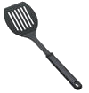

11/12/08: Best Day Ever
Yesterday I went to the store and got some much-needed spatulas! (What better way to say I love myself than to buy myself a spatula?)
So fresh and so clean
Yesterday I went to the store and got some much-needed spatulas! (What better way to say I love myself than to buy myself a spatula?)

My favorite cartoon character is Cookie Monster, and my favorite dessert is cupcakes, so Cookie Monster cupcakes are the best of both worlds.
Did you know? Cookie Monster once said, Sometimes me think what is love, and then me think love is what last cookie is for. Me give up the last cookie for you. I wonder if the same applies for cupcakes? (If so, I don't think I can ever love ANYONE!)